Killian Jeuffroy
Développeur web - spécialisé en backend
Étudiant en 2ᵉ année de BUT Métiers du Multimédia et de l'Internet (MMI) à l'IUT de Blois, je suis passionné par les nouvelles technologies et le développement backend. Cette formation polyvalente m'a permis d'allier technologie et créativité à travers de nombreux projets académiques et personnels, renforçant ainsi mes compétences techniques.
Je recherche un stage de 11 semaines à partir du 7 avril 2025 pour intégrer une équipe dynamique et travailler sur des projets innovants. Je suis motivé à contribuer activement tout en poursuivant mon apprentissage dans un environnement stimulant.
Découvrez mon parcours en code
Site de Judo
Site de Judo réalisé en HTML, CSS et JavaScript. Ce site a été réalisé dans le cadre de ma formation en développement web.
Voir le projetDes compétences solides et adaptées à vos projets
Des technologies modernes maîtrisées pour réaliser vos projets rapidement et efficacement.
Front-Office
- HTML
- CSS
- SASS
-  JavaScript
- React JS
- Next JS
- Vue JS